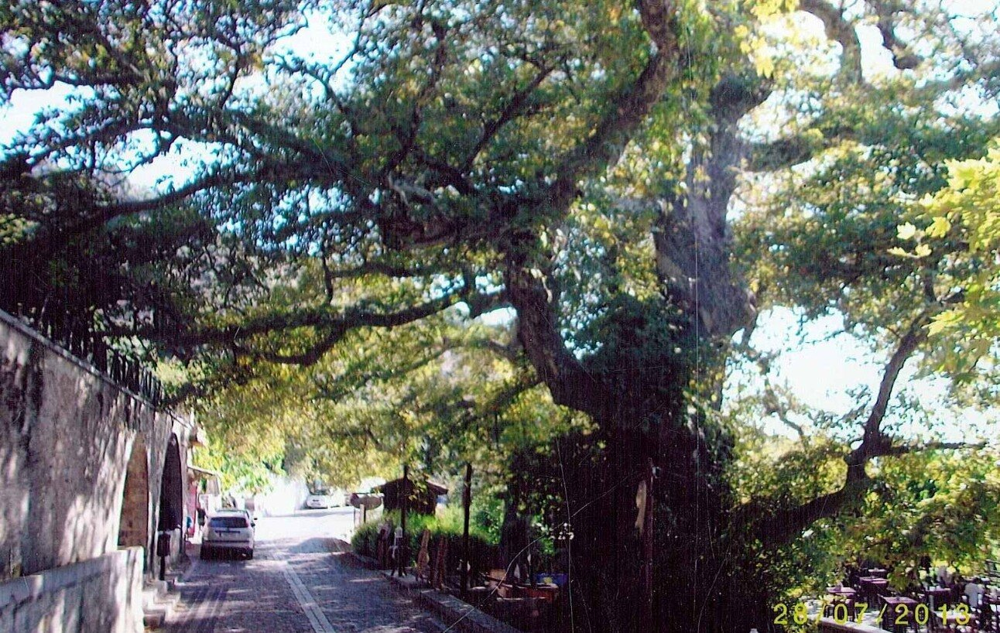
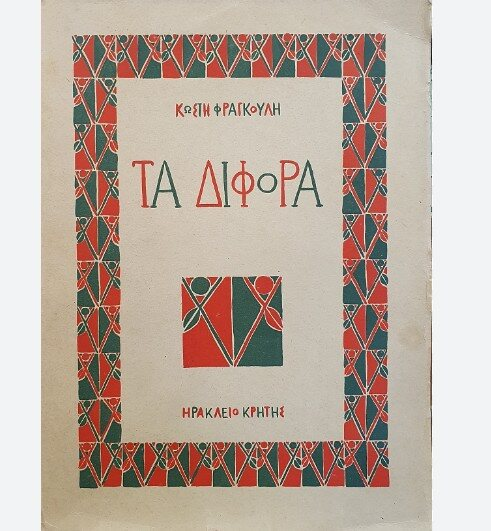

Περί πλατάνων
Δεν είναι λίγες οι φορές που θα αρχίσω να γκουκλάρω ασταμάτητα καθώς πίνω τον καφέ μου και « τσούπ» κάποιο κείμενο το οποίο θα περιγράφει την ιερότητα των δέντρων, το πόσο τα δέντρα ενσωματώνουν την ίδια την ανθρώπινη συλλογική μνήμη, και γενικότερα το πόσο σημαντικά είναι για «εμάς τους ανθρώπους»! Πάντα χαίρομαι όταν διαβάζω παρόμοια κείμενα και ενθουσιάζομαι με άλλη μια απόδειξη ότι υπάρχουν πολλοί άνθρωποι εκεί έξω που συγκινούνται με τα ίδια πράγματα που συγκινούν και μένα για αυτό και πάντα τα καλωσορίζω. Για αυτό τον λόγο θέλω να μοιραστώ το παρακάτω δείγμα λαϊκής ποίησης το οποίο πραγματικά ζωντανεύει το δέντρο μέσα από τον λόγο και την φαντασία του Κωστή Φραγκούλη. Αυτού το μεγάλου λαϊκού ποιητή της Κρήτης ο οποίος άφησε πίσω του «διαμάντια χρυσοστόλιστα» όπως λέει και το γνωστό άσμα (βεβαίως βεβαίως).
Κωστής Φραγκούλης
Ο Κωστής Φραγκούλης το γεννημένος στο Λάστρο της Σητείας στην Κρήτη σε μικρή ηλικία έφυγε για τη Χώρα, δηλαδή το Ηράκλειο και έπιασε δουλεία ως βοηθός στην γνωστή εφημερίδα της εποχής Ίδη. Πολύ γρήγορα το ανήσυχο πνεύμα του και η τάση του να σκαλίζει τα πράγματα πίσω από την επιφάνεια τον έστρεψε προς τη συγγραφή! Το συγγραφικό του έργο είναι τόσο πλούσιο και πραγματικά αποτελεί μια τεράστια παρακαταθήκη ειδικά για τους Κρητικούς! Διαβάζοντας κάποια από τα έργα του ουσιαστικά ταξιδεύεις στον χρόνο με τον συγγραφέα να σε παίρνει από το χέρι και να σε ξεναγεί στην παλιά Κρητική υπαίθρο, χαρίζοντας σου εικόνες μοναδικές, βγαλμένες από μια άλλη πραγματικότητα στην οποία ακόμα και τα πουλιά, τα δέντρα και τα φυτά έχουν και αυτά ψυχή και λαλιά όπως ακριβώς και εμείς οι άνθρωποι!
Ο πλάτανος στο Κράσι



"-Να σε ρωτήξω πλάτανε, πόσο χρονώ λογάσαι; Και ποιος σε πρωτοφύτεψε στη κρασανή δετάδα; -Να σε ρωτήξω δα κι εγώ, πόσο με καρατάρεις, να δω αν είσαι μπιριτζής και καλοστιμαδόρος, κατά που δείχνει η ρίζα μου η χιλιοροζασμένη και μολογούν οι κλώνοι μου οι μαυρομουχλιασμένοι. Τσι’ χίλιους χρόνους πο’ περνάς, τσ’ χίλιους πεντακόσους, και τα σημάδια που θωρώ για δυο χιλιάδες δείχνουν. Καλή ταμίνα μου ’κανες, στίμα καλή μου βρήκες, μα οι δυο πολλοί ’ναι ζάβαλε, οι χίλιοι χρόνοι λίγοι. Μα κεια κοντά με φύτεψε με τη δεξά ντου χέρα ο Παντοδύναμος Θεός, τον τόπο να δροσίζω, δίπλα στο κεφαλόβρυσο που τρέχει μέρα-νύχτα, κι οι ρίζες μου χωστήκανε στα σπλάχna τση Σελένας. Κι εβύζαξα το γάλα τζη κι ήπια τη δύναμή τζη, και θράφηκα κι αντριεύτηκα και μπόρες δε φοβούμαι, μήδε αστραπές, μήδε βροντές, μήδε βαρύ χαλάζι.- Ήθελα και να κάτεχα τόσο καιρούς αν είσαι· ιντά ’δανε τα μάθια σου κι ακούσανε τ’ αυτιά σου; Εσάλεψε τσι κλώνους ντου, ήσεισε τα κλαδιά ντου, σαν να ’θελε να θυμηθεί, ν’ ανοίξει τα χαρτιά ντου, ωσά τον γέρο τον παππού με τα γγονάκια γύρω, που παραμύθια του ζητούν να ντως επεί και νάκλια. -Είδα και λύπες και χαρές, δόξες και καταφρόνια· πέρασα χρόνους δίσεκτους, καιρούς κατατρεγμένους, νύχτες χωρίς αστροφεγγιά και μέρες δίχως ήλιο, βοριάδες ανεμόχολους, πάχνες και κουκοσάλια. Μα και μελτέμια δροσερά στα φύλλα μου να παίζουν, και στα κλαδιά μου τα πουλιά με αγάπη να φωλεύγουν. Αφέντες είδα δυνατούς, ραγιάδες φουρκισμένους, λιάπηδες απροσκύνητους να μ’ έχουνε για κάστρο. Στσι ροζασμένους κλώνους μου κρεμούσαν τ’ άρματά ντως κι εθέτανε στ’ απόσκιο μου, στη ρίζα μου ακουμπούσαν να δέσουν τσι λαβωματιές, να λαγοκοιμηθούνε, με τ’ όνειρο του λυτρωμού, κι εγώ σα πρωτομάνα που ’χει στη κούνια πρωτογιό, χαμήλωνα τσ’ κλώνους και με σκοπούς τση λευτεριάς γλυκονανούριζά τζοι. Και δόξες είδα και τιμές, κι αφανισμούς κι αντάρες, και όλης τση γης τσ’ αδυνάτους, του κόσμου τα μιλέτια, που θέλαν ν’ αφεντέψουνε τση Κρήτης το ρηγάτο. Είδα των Φράγκων κάτεργα, των Τούρκων μπαϊράκια, Σαρακηνούς να με πατούν, τσι τόπους να κουρσεύγουν, τον Νικηφόρο τον Φωκά με το βαρύ φουσάτο να ξαναφέρνει τον σταυρό με το σπαθί στη χέρα, να ξαναχτίζει τσ’ εκκλησιές και να κρεμά καμπάνες, να φέρνει τον δικέφαλο στσι ρίζες και τα κάστρα. Κι άμα γλυκοξημέρωσε κι εδιάβηκεν η νύχτα, κι ήλιος γλυκύς ανάτειλε κι ήφεξε πάλι η Κρήτη, και των αρμάτω η ταραχή επέρασε κι η ζάλη, κι η ξορισμένη λευτεριά με τον σταυρό ξανάρθε, κι ανεντρανίσαν τα βουνά, οι κάμποι ξαναθίσαν. Από ψηλά ’ρχουνται βοσκοί, πο’ χαμηλά ζευγάδες, συφάμελοι στη ρίζα μου, στσ’ κλώνους μου ποκάτω, και στρώνουνε φαντά χαλιά, χιράμια κεντησμένα, και τα στολίζουν με φαγιά, σαν τση Λαμπρής τη ταύλα, και τρων και πίνουν άκολοι, με λύρες και λαγούτα, και χαίρουνται τη λευτεριά και μπαλοτοκοπούνε, και χαίρουνται τη λευτεριά σαν να ’χουν Πάσχα και Λαμπρή, γάμους και πανηγύρια. "